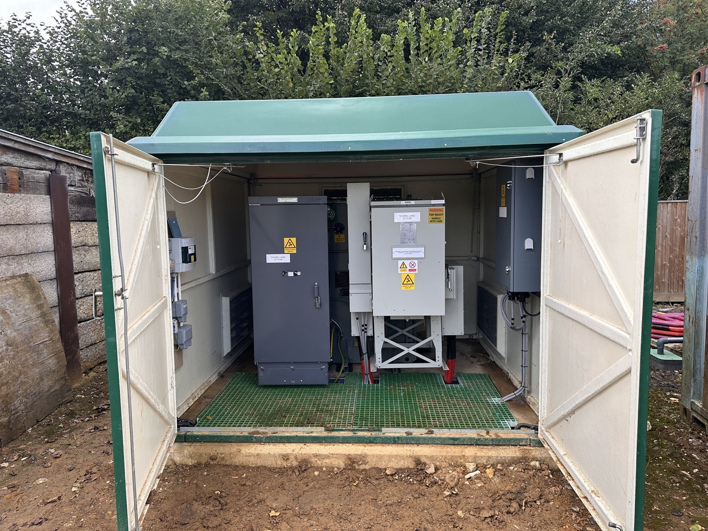

Network operations
HV operational control, switching, isolation, earthing, planned outages and operational handover.

Powertec Utilities Ltd
More than two decades of HV operational and project experience across UK electricity distribution.
HV operational control, switching, isolation, earthing, planned outages and operational handover.
Mobilisation, specialist resourcing, construction interfaces, commissioning and programme delivery.
Fault response and restoration of network conditions to normal operating arrangements.

Powertec has mobilised and delivered HV asset replacement and network refurbishment programmes, combining project management and SAP responsibility across the full delivery lifecycle.